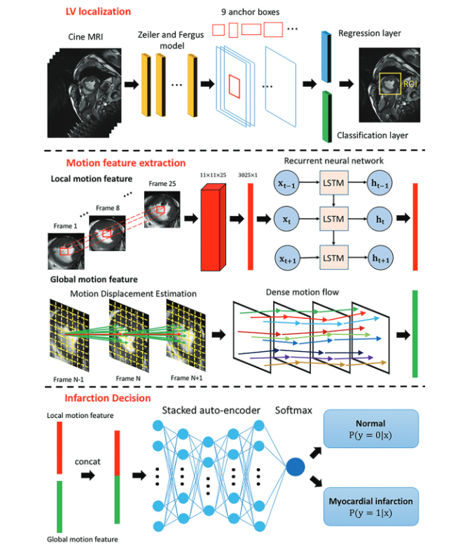
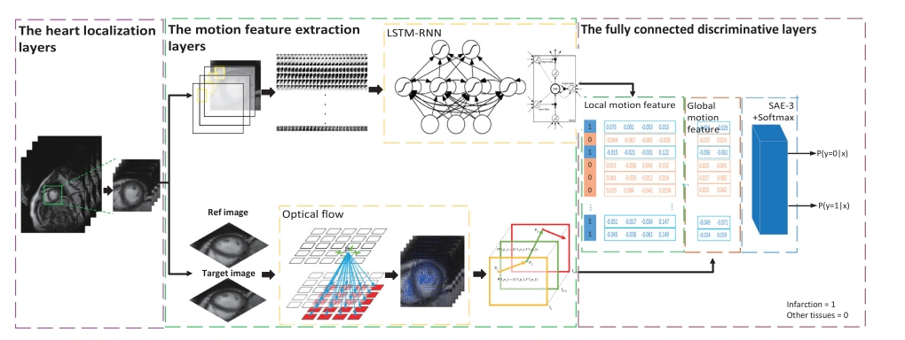
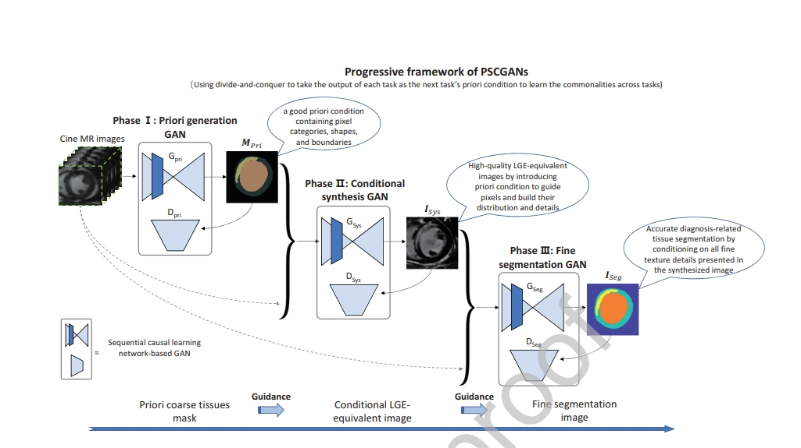
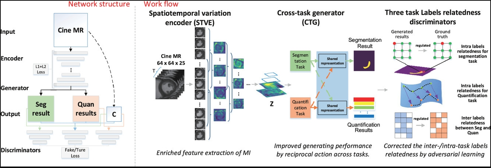
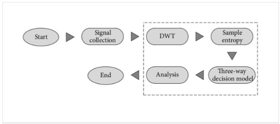
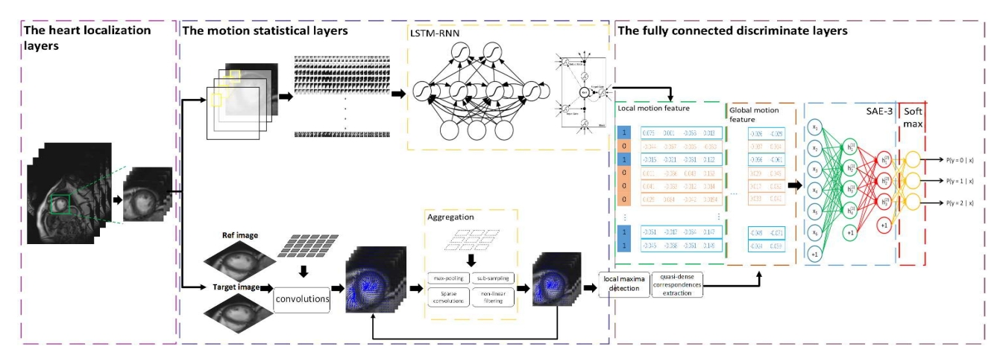
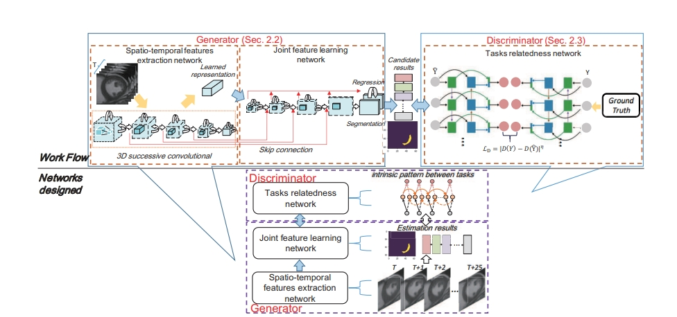
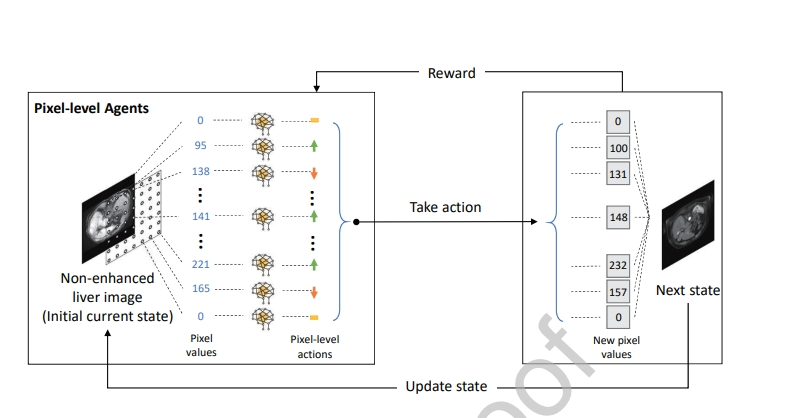
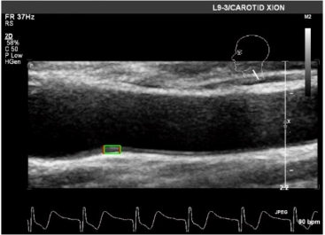
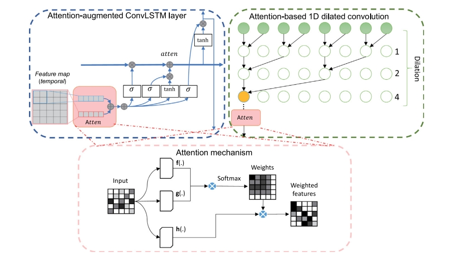

Publication

Cardiac Physiology Knowledge-Driven Diffusion Model for Contrast-Free Synthesis Myocardial Infarction Enhancement
International Conference on Medical Image Computing and Computer-Assisted Intervention (MICCAI), pp 200-210, 2024

Prediction of Freezing of Gait in Parkinson’s disease based on multi-channel time-series neural network
Artificial Intelligence in Medicine
154, 102932, 2024 
Accurate segmentation of liver tumor from multi-modality non-contrast images using a dual-stream multi-level fusion framework
Computerized Medical Imaging and Graphics
116, 102414, 2024

Deep learning for diagnosis of chronic myocardial infarction on nonenhanced cardiac cine MRI.
Radiology
291 (3), 606-617 [Link]

Direct delineation of myocardial infarction without contrast agents using a joint motion feature learning architecture.
Medical image analysis
50, 82-94 [Link]

Contrast agent-free synthesis and segmentation of ischemic heart disease images using progressive sequential causal GANs.
Medical image analysis
62, 101668 [Link]

Segmentation and quantification of infarction without contrast agents via spatiotemporal generative adversarial learning.
Medical image analysis
59, 101568 [Link]

Complexity analysis of electroencephalogram dynamics in patients with Parkinson’s disease.
Parkinson’s Disease
2017 [Link]

Direct detection of pixel-level myocardial infarction areas via a deep-learning algorithm.
Medical Image Computing and Computer Assisted Intervention
-MICCAI 2017 [Link]

MuTGAN: simultaneous segmentation and quantification of myocardial infarction without contrast agents via joint adversarial learning.
Medical Image Computing and Computer Assisted Intervention
–MICCAI 2018 [Link]

Synthesis of gadolinium-enhanced liver tumors on nonenhanced liver MR images using pixel-level graph reinforcement learning.
Medical image analysis
69, 101976 [Link]

Beat-to-beat blood pressure and two-dimensional (axial and radial) motion of the carotid artery wall: physiological evaluation of arterial stiffness.
Scientific reports
7 (1), 42254 [Link]

Video salient object detection using dual-stream spatiotemporal attention.
Applied Soft Computing
108, 107433 [Link]